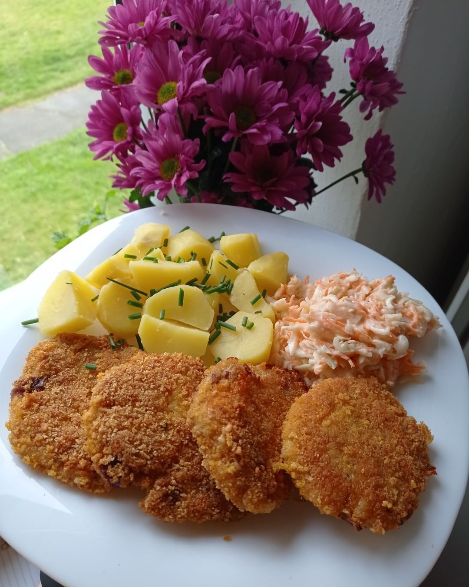

Mleté mäso podľa @kulifit — Normy Jedál
Občas mi manžel řekne, ať uvařím nebo upeču něco normálního 🤷♀️😀🙈.
Má tedy co chtěl 🤪.
"Holanďan" - mleté kuřecí maso s nivou, obalené v kukuřičné strouhance, vařené brambory s pažitkou a coleslaw s jogurtem 🤤.
No co vám budu povídat, byla to dobrota. 😉
#nutricnivkuchyni #vyzivovyporadce #jidleniceknamiru #kulifit #mamavarizdrave #hubnutipoporodu #bezvycitek #hubnusrozumem #nutricniterapeut #varimeslaskou #laskaprochazizaludkem #varimmanzelovislaskou #mletemaso #holandskyrizek #coleslaw